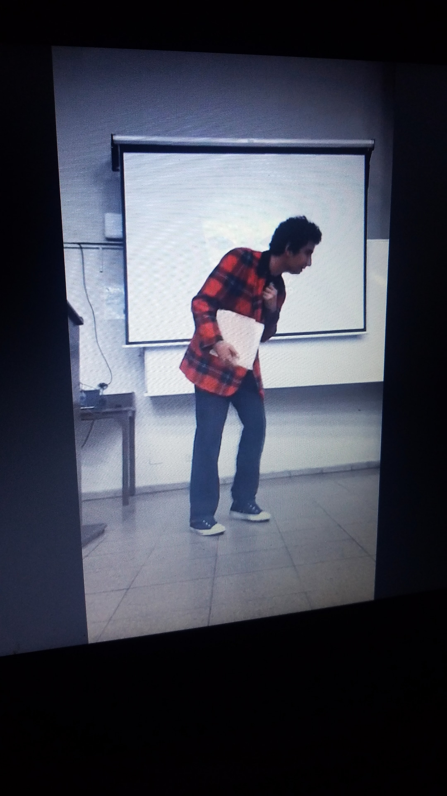

Inicio
El principio de esta actividad fue de manera repentina, al final de una clase, sin comentarnos nada antes,
se reprodujo un video junto a un audio en donde se nos ponía en contexto.
La misión, salvar a Kurt, ayudando también que los planes de Ale Rav no se concreten y mantener la universidad
a salvo.
Primer dia
Se nos proporcionó una serie de ejercicios de ABD para realizar en un SGBD.
Esto, con el fin de 'desbloquear' una pista, la cuál nos acercaba un poco más
a revelar la identidad de Ale Rav.
Es importante destacar que a medida hacíamos estos ejercicios
nos comunicabamos con Kurt, era la única forma segura.
Luego de resolver el ejercicio, conocemos a un nuevo personaje involucrado que se le conoce con el alias Ada Jarvis.
Se nos consultó si podiamos buscar algún mensaje cerca del polideportivo, porque al parecer esta chica le encantaba pasar ahí y según Kurt, está en peligro porque ha desaparecido.
Segundo dia
NO ESTABA DESAPARECIDA ADA JARVIS.
Pasa que en esta ocasión ella nos contacta y nos cuenta un poco su historia, desde el punto de vista de ella, claro.
Nos proporciona otro par de ejercicios a resolver para seguir investigando el caso.
En esta ocasión, al resolver el ejercicio se nos mandó al atrio debajo del edificio D a preguntar por Renacho Melgar.
Ésta persona, el cuál es pintor, nos brindaría el siguinete código con el que vamos a trabajar.
Tercer dia
Kurt nos cuenta un poco de su relación con Ale, para ir al grano practicamente nos dijo
que es un crack en lo que hace y que está un poco triste con todo lo que estaba sucediendo.
Ahora se nos presenta otro ejercicio de ABD un poco dificil de realizar para ser sincero.
Muy bien, ya resuelto el ejercicio, Kurt nos dice que Ada ha descubierto el código de Ale para su malévolo plan
y nos manda el código para poder compilarlo, también nos cuenta que finalizar todo, él se irá con Ada a Kiribati, país en donde Ada se encuentra ya
por precaución.
Cuarto dia
En este día nos llega un mensaje de Ale que ya ha descubierto que quieren disolver su plan, con esto Kurt se siente desesperado con un pánico horrible.
Pasado esto, Kurt nos envía frente a las Terrazas de la UCA para resibir su mensaje mediante un dron que se ocupo para mandar las siguientes instrucciones.
Resueltos los ejercicios, Kurt concluye que Ale al ver tanta gente fuera descifrando el mensaje ha huido.
Nos convoca al aula magna V para revelar su identidad día Viernes por la tarde y así denunciarlo todos a la PNC.
FINAL
Parte del estudiantado se presentó como se había convocado a la Magna V.
Pasó de todo, hemos visto a Kurt morir, mejor dicho, asesinado por Ale.

Todo se debió a que Ale se fijó cuanto Kurt lo grababa, gracias a ello logramos descubrir su identidad, por cierto.
Lastimosamente perdimos a un verdadero héroe que no le importó perder incluso su vida con tal de mantener viva y no destruida la universidad.